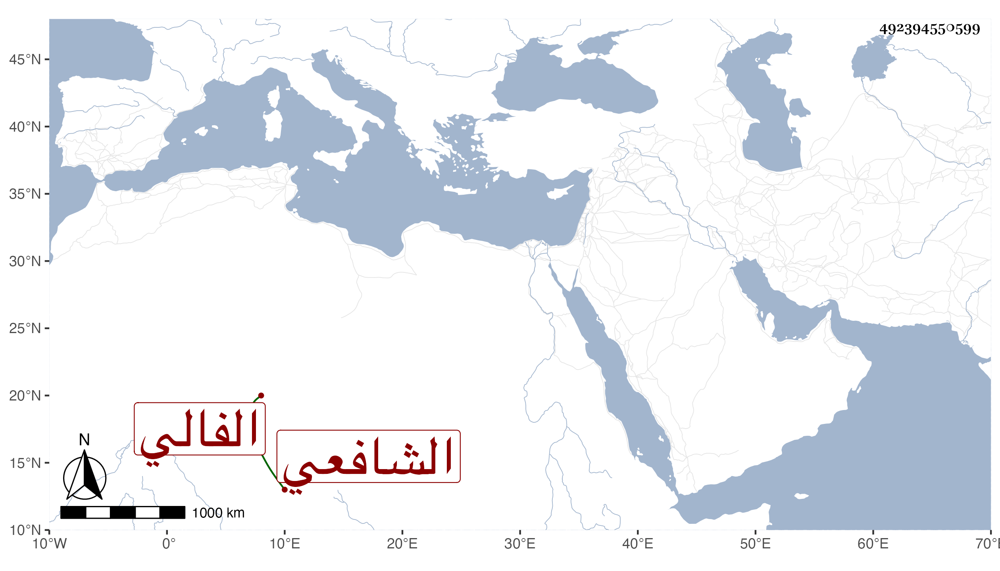

0902Sakhawi.DawLamic.ITO20230111-ara1.EIS1600.492394550599
Biography ID: 492394550599
301
عبد المحسن بن محمد بن عبد المحسن قوام الدين أبو مسلم بن إمام الدين ابن قوام الدين الفالي الشافعي كان أفقه فقهاء عصره وأتقى علماء دهره ورئيس المفتين في الشافعية حسبما وصفه بذلك وبأزيد منه الطاووسي وهو من شيوخه الذين سمع منهم ، وقال إنه مات في ظهر يوم السبت ثامن رمضان سنة أربع وعشرين عن ثمان أو تسع وخمسين سنة .
